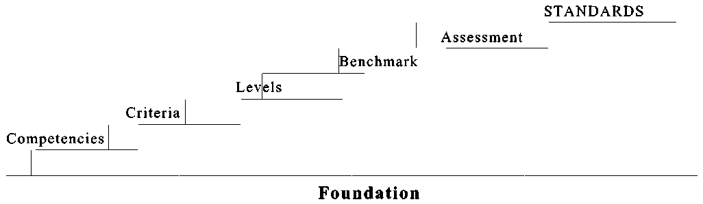
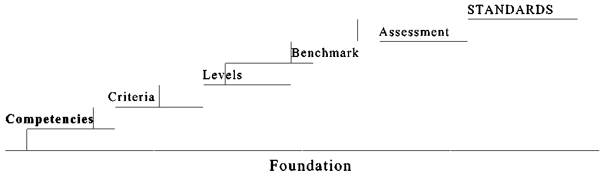
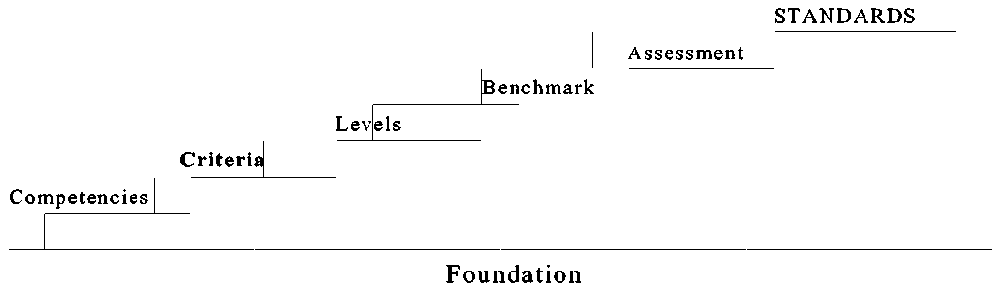
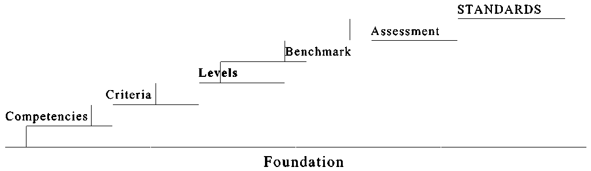
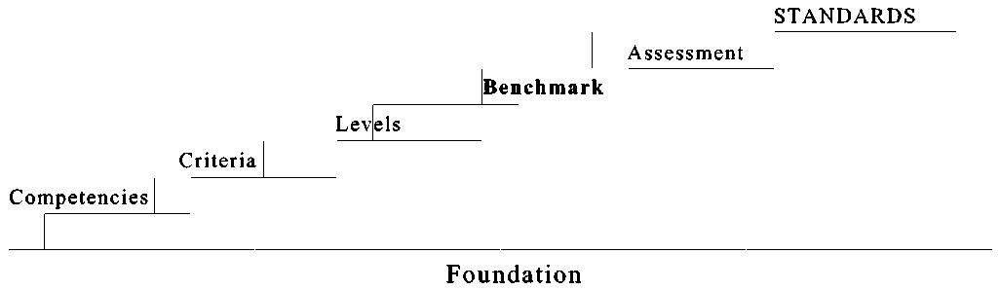
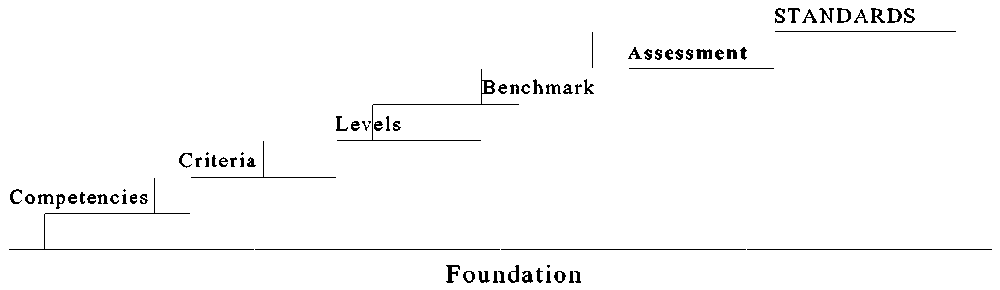
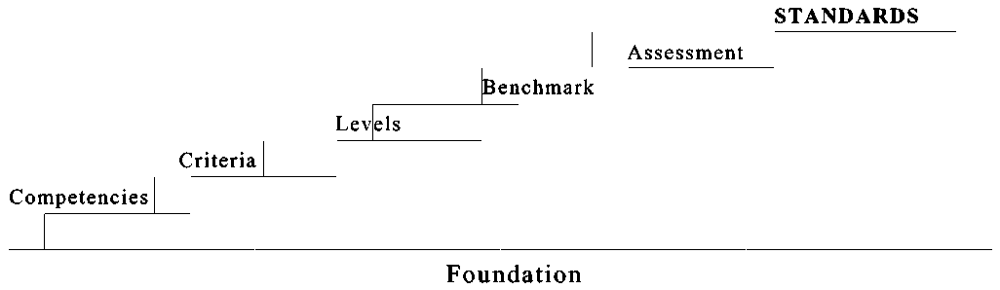

A Framework For Setting Occupational Standards
Donald Glendenning
Glendenning Educational Resources
62 Queen Elizabeth Drive
Charlottetown, PE C1A 3A9
FOREWARD
This paper is intended for people who set occupational standards and for those who design training programs to meet them. It should also be of interest to the harried administrator with a responsibility for standards although not an intimate knowledge of the subject. It is a practical, non-academic presentation.
This paper reflects a substantial but not an exhaustive literature review; 50 years of experience in education both as a teacher and an administrator, extensive experience working with industrial advisory committees, an examination of current standard-setting practices, experience gained in offering workshops on the subject and considerable reflection. A brief description of the Canadian Scene, a handout at one of my workshops, is included as Appendix 1
The ideas are being presented at this time because of the belief that attention to standards is overdue. The current model is not adequate; some re-thinking is necessary and timely. Too often training standards and occupational standards are confused. Standards involve a sorting process and deserve their own attention. More of the same is not the answer; a different model is required. The new millennium is a good place to start.
I am grateful to many people for helping to shape and clarify my thoughts on this issue; a few had an opportunity to read an earlier version. Their gracious response to my badgering for their time and comments is much appreciated. The list is long and spans many years. My thanks to all of you. Having said this, however, I take full responsibility for the work presented herein.
Don Glendenning
January 2000
TABLE OF CONTENTS
1 Foreward
2 Table of Contents
3 Introduction
4 Foundation
Definitions
Assumptions
Characteristics
Benefits
Components
Higher Order Thinking
5 Competencies
Definition
Characteristics
Issues
Framework
Identification Process
A Standards Profile
Examples
6 Criteria
Definition
Characteristics
Identification Process
Examples
7 Levels
Definition
Characteristics
Examples
8 Benchmark
Definition
Characteristics
Examples
9 Assessment
Definition
Purpose
Issues
Assessors
Communicating Results
10 Standards - A Summary
Components
Guiding Principles
Common Flaws
Development Model
Access Model
11 Appendices
The Canadian Scene
Glossary
Occupational Analysis
DACUM Chart
Australian Performance Levels
Bibliography
OVERVIEW
Conversations and media include talk, discussion, analysis, reports and complaints about declining occupational standards; the school system is usually blamed. Schools, colleges, universities and professional and certification bodies “raise” their standards but complaints continue. A gap exists between public expectations and what the system delivers; perhaps it always will. The gap can and must be narrowed. Schools are blamed also because people generally fail to distinguish between educataional and occupational standards.
Current occupational standards rely heavily on the nature and amount of information learned, the time spent in a training program, the amount of experience on-the-job and other input measures. The emphasis is on the actual and perceived level of knowledge acquisition. The consumer of occupational expertise, on the other hand, rates performance on the nature and level of service provided - on the application of knowledge to solve a problem or to make a product. These are output measures. Little progress in raising standards is likely until these conflicting views are reconciled. In the long run, the consumer’s view will prevail. It is time to align the content and measurement of training programs with standards of the workplace.
The essence of a performance standard lies in identifying the competencies to be demonstrated and the level of performance expected on each. The concept is simple but gets lost in the bureaucracy of implementation. We’ve made a simple model un-necessarily complex.
Progress has been and is being made. Standards are increasingly competency based. A competency analysis has become the basic document on which certification requirements are based . Organizations using a competency analysis have a head start; they have taken the first step in instituting performance based standards. Those organizations not using a competency analysis should start now. More will be said about competency identification later in this paper.
Performance based rating scales are the weak, or more often the missing, element in current occupational standards. Most of the material which I have reviewed on the subject fail to recognize this component. Current standards, for the most part, continue to differentiate performance levels by what the person can or cannot do; insufficient attention is paid to how well they do it. Levels of performance are poorly defined or missing.
By way of example, many readers, I am sure, are called upon to “edit text”. It is a clear and unambiguous statement. I can edit text and consider it one of my competencies. I am quite sure, however, that many, if not most, readers can perform at a much higher level than I. It is likely that they can edit more quickly, more accurately, with less supervision, and with fewer checks in available references. In other words, others perform at a higher level than I on this competency. Whereas classifying people by whether or not they can “edit text” is one component of a standard, the level of performance is a distinct and separate factor.
I am not sure why people who set standards are so reluctant to adopt a performance based rating scale. Perhaps it arises from a desire to be, and to be seen to be, objective; that is, a desire or a requirement to remove judgement from the process. Judgement cannot be removed and trying to do so is a waste of valuable time. Assessing performance involves judgement; our objective should be to make the judgement portion as fair, reasonable, consistent and transparent as possible.
Training standards and occupational standards are not the same although much of the current literature fails to make the distinction. The lines between the two are frequently obscured and in, some instances, one is mistaken for the other. The confusion is widespread. Occupational standards stand alone. They identify what a person can do and how well the person can do it. The implementation of standards is a sorting process. Occupational standards are not based on the amount of training, the nature of the training, where the training as provided or by whom, or even the grades obtained in the training institution.

The components of a competency based system of occupational standards are easily identified and readily understood by people in the occupation. The pages which follow describe each component in some detail. The components are:
1 Competencies
Competencies are the component; an occupational analysis is how you identify them. The task is to prepare an occupational analysis; the result will be an identification of all the competencies of the field. The analysis should not be shaped by any one industry or employer. Neither should competencies be eliminated because of perceived capabilities of a trainer or training institution. From an analysis of the field or occupation can be selected the competencies to be included in the standard - the competencies that everyone meeting the standard is expected to be able to demonstrate.
2 Criteria
Criteria are a key component of standards and communicate what is important to employers. It is preferable to identify criteria which can be applied across an occupation. The application of the rating scale to an individual competency requires both knowledge of the occupation and the judgement of the assessor.
3 Levels
The rating scale should reflect that used in the work place even though the work place scale may be unwritten. Ideally, it will also become the rating scale used in the training situation.
4 Benchmark
A benchmark is a point of reference which anchors the rating scale to the occupation.
5 Assessment
While, strictly speaking, an assessment strategy is not part of the standard, such a strategy, however, should be put in place including the competencies to be demonstrated and the implementation plan.
Visually, I think of the standard setting process as being a set of steps with each step being separate and distinct. Normally, steps are taken one at a time; it is possible for energetic and experienced people to bound up the steps taking several at a time. I urge beginners, however, to make each step a separate one. And even such a simple structure as a set of steps requires a firm foundation.
Let’s take our first step, Laying a Foundation

“ the standards will be used for a variety of related purposes, including:
to promote recognition of qualifications;
to facilitate labour market mobility
to guide the development of education and training programs;
to establish references for the accreditation of programs;
to establish references for professional accreditation; and
to set measures for occupational delineation in industry.”
Technology (13)
FOUNDATION
It is imperative that we have a common understanding of the thinking involved. Let’s begin with some definitions.
DEFINITIONS
This section included a few definitions ; a more complete glossary of terms is found in Appendix 2.
Standard: a level of performance of a service or a product.
When we purchase a piece of equipment, a new computer for example, we have certain expectations of what the computer will be able do or, perhaps more accurately, what, we will be able to do using a computer. For example, our new computer should, among other things, be able to:
to produce graphics
perform a number of tasks simultaneously
easily accessed
be easily serviced and maintained, and
operate within a network.
These may be considered as performance standards of a computer.
Manufacturers also provide other technical information about their product. Their specifications may include:
size of footprint
weight
number of drives
internal or external modem
number of ports, and
size of size of monitor.
These characteristics may be important to the purchaser, and may be part of the purchasers specifications, but they are not considered performance data.
The same applies for services that we purchase. We have an expectation for the level of service provided by our physician, accountant, teacher, or service station attendant. The extent to which the service provider meets our expectations is the extent to which they have met our standard. People who provide a service should be able to demonstrate competence in their specialty whether that specialty be accounting, medicine, electronics, or retail selling. In addition to technical competence, they may be required to:
work as a member of a team
deal with the public
negotiate contracts
practice ethical behaviour, and
organize and maintain a work schedule
In addition to competencies, a potential employee may be required to have:
a degree or diploma
relevant work experience
specialized certificates or endorsements, and
a medical certificate
While the latter may be important and some may even be indicative of a level of competence, by themselves they are not competencies.
A standard is a level of performance. A person who has met a standard is able to perform at or above the required level and may be awarded a piece of paper attesting to the accomplishment. The piece of paper, usually a certificate, diploma, degree or a professional designation, certifies a level of performance based on a sample of that performance Anything less jeopardizes the integrity of the system.
Occupational standard: a level of performance in an occupation set by an employer, credentialing body or other organization.
Occupational standards define what an employer expects of an employee, what a credentialing body expects of a person being credentialed, what a consumers expects of a person they hire or a persons who provides products and services. Some occupational standards are established by governments, apprenticeship is an example; for the professions and many emerging occupations, the responsibility has been assigned through legislation to professional organizations. In a few cases, an organization has assumed responsibility for standards without any legislative authority.
Occupational standards may be broad or narrow; that is, they may be for an individual skill (writing a letter), a cluster of skills (communication), a job (repairing or replacing brakes), an occupation (automotive servicing) or a profession (nursing).
Occupational standards apply to any occupation, calling or profession, however, the term is most often applied to the more traditional occupations. Standards may be what already exists or what is planned; they may be written or they may simply be part of the culture - “the way things are done around here”. Standards may apply to a company, a number of companies, the workforce in a region, or at a national or international level.
National standard: a set of occupational standards recognized and applied in all jurisdictions of a country.
Much of the debate revolves around national standards. The author first encountered the debate more than three decades ago; the debate will likely continue for another three decades. But the debate is changing. It is less and less about course content, hours of training, qualification and training of staff, library resources, lab equipment or entrance requirements. The debate is beginning to focus on what constitutes performance and how it can be measured. Increasingly, it is about what a person can do rather than how, when and where he/she learned to do it.
National standards refer to the recognition of an individual’s level of performance by a province, an employer, a certification body, or any body which is different from the one which established the standard and certified the person. Beyond the question of turf, the issues are primarily how to document what a person can do and how well he/she can do it, and the validity and reliability of that documentation.
Based on a review of the literature and discussion with colleagues, it appears that certification bodies agree, for the most part, on competencies as a basis for standards. The first step is a national consultation and a national occupational analysis. Canada’s Apprenticeship Red Seal Program is a good example. Agreement beyond the analysis appears more tenuous. Based on my review, certification based on performance continues to neglect achievement of different levels on any competency.
Training standard a level of performance which must be demonstrated in order to receive a certificate or diploma from an educational institution.
If the purpose of a training course or program is to prepare people for employment, the similarities between training and occupational standards will be greater than if the training has some other purpose. If the program is vocational, training standards should be based on occupational standards.
In designing a training program, an institution will select competencies from the appropriate occupational standard. The institution will likely not be able to select all competencies because of limited time, equipment, instructional resources or space. For many of the same reasons, learners will likely not be able to reach occupational levels on all competencies attempted. Training standards often fall short of occupational standards for the following reasons:
learners have not had an opportunity to learn or practice all of the competencies required of an occupation, and
learners have not had an opportunity to learn and practice other competencies to a level equal or surpassing the occupational requirements.
Because of this, it is useful to identify a number of levels within an occupation. Typical levels include:
entry
apprentice
journey person
master crafts person
To move from one level to the next may require only practice to improve speed or accuracy. This can often be accommodated within the work situation. A major complication arises from the fact that many training programs are discipline based and not competency based. One
cannot tell from a transcript, therefore, the range of competencies which have been achieved or the level on any of those competencies. Transition from one level to another is facilitated when the training program is competency based.
Assessment is a process of gathering information about a person’s performance on a task or set of tasks for the purpose of making a judgement about the level of achievement.
Assessment is a sorting process involving the identification of people to whom a credential will be awarded. The sorting is based, not on credentials held, time served in earlier employment, length of time with an employer, or participation in-service training, but solely on observed performance. Traditional degrees, diplomas, certificates, transcripts, letters of reference, apprentice or work records my provide supporting evidence but they do not replace observed performance.
Current assessment systems, even those purporting to be competency based, still rely heavily on traditional input measures such as graduation from an accredited or otherwise recognized institution or program, completion of a period of work experience, references from instructors and supervisors and, in some cases, another written examination. Such an assessment strategy relies on input rather than performance. These cannot be said to be competency based.
One of the major issues which arises when assessing performance, relates to the size of the sample of competencies to be demonstrated. In other words, if a standard involves performance to an established level on 75 competencies, does the certification body require a demonstration of all competencies before awarding a credential? Does acceptable performance on certain key competencies provide sufficient information to assume that the person is competent in the others? Selected sampling would seem to be in order with more detailed assessment undertaken when warranted by preliminary test results.
SOME ASSUMPTIONS
The establishment of occupational standards is based on a number of assumptions.
Society wants/needs occupational standards. The matter of who needs and who wants standards must be dealt with. And needs and wants are not the same. Occupational standards should provide a level of safety and security to consumers and the public at large. Sometimes, however, the reasons for new or higher standards are unclear. Some people would go so far as to believe that standards setting involves raising the status of an occupation or protecting the turf of current practitioners. Certainly we must ask, for every occupation, “what added-value will standards bring and how do we know? Objective information on the beneficial impact of requiring people to meet occupational standards should be available from bodies offering or requiring certification.
Standards should reflect output not input. I have found no evidence to support a close linkage between years of experience and the later level of occupational performance except, perhaps, at the worker entry level. The same applies to the number of years or months of pre-employment training. These are input measures. On the other hand, the time taken to perform a task or job is an output measure and is an important indicator of performance. Reliance on input measures should be the subject of a serious review.
Most workers and learners can identify with and meet standards. Standards should be stated in terms that are readily recognized and understood by all stakeholders - trainees, new employees, experienced workers, supervisors and personnel administrators. Trainees and new employees especially need to understand entry level standards. Both also need to be aware of the standards expected of them as competent and seasoned workers. This should not be a problem if standards are set by practitioners.
Supervisors can judge performance against standards. Supervisors judge the performance of people they supervise. Clearly defined standards should ensure that judgements are based on fact and are consistent among employees. It is likely that, generally, good supervisors would agree on what constitutes an acceptable level of performance in their field.
Occupational and training standards should share the same foundation. Training standards should be based on occupational standards. Employers often question the relationship of training standards to work standards. Training tends to emphasize disciplines rather that competencies workplace competencies.
Reliability and validity can be assured. Assurance of reliability must start with clearly defined standards. Performance is the final exam. Input may have a bearing and is evidence but it should not be the determining factor.
Workers can demonstrate having met standards through different tasks. It is not necessary for all people to perform all of the same tasks in order to demonstrate having met the same standard. On the other hand, it is likely that all should be able to perform certain key tasks. Even Olympic finalists are allowed some freedom in the elements or tasks they perform. And most of us, including most workers, are not Olympians.
CHARACTERISTICS
Competency based occupational standards have a number of clearly identified characteristics. They:
Reflect practices in the community they serve. This is usually accomplished through undertaking an occupational analysis. Standards are not derived from academic disciplines. Disciplines may be useful, even necessary, in improving one's performance but the study of a discipline and performing to standard are not the same.
Are based on observable performance. In performance- based standards, it is not what you know that counts, it is what you can do with what you know. What you can do can be observed. The process of assessing what you can do may involve a measure of what you know; but the two are not the same.
May involve a process and/or a product. Frequently the accomplishment of a task results in a tangible product. But this is not always the case. Sometimes, it is the process that must be observed. Neither is it unusual to demonstrate both a process and a product.
Should be credible to the receiving community. Standards must be relevant and credible to the receiving community. While the same skill may be required in more than one field, the required level of performance may differ between fields. In other words, a standard is valid across fields only when the benchmarks are the same.
May include levels other than the required level. There are different levels of performance possible on any skill or competency. Rating scales are required to identify and briefly describe the various levels. Differences between levels must also appear evident to users. Two obvious performance levels include that of entry and that of an experienced worker. By having a number of levels, a standard can be situated in the context of the workplace.
Are attainable. Standards may be high but they must also be attainable. A rule of thumb in setting standards suggests that, the assessor can readily identify people who operate at the standard as well as people who operate above and below the desired standard.
Are measurable. It is assumed that a standard is real and therefore measurable. The assessor must be able to visualize any skill to be assessed and different levels of performance on each skill. The actual or perceived lack of tools to measure performance on a given standard should not be used as an excuse for not setting a standard. On the contrary, if a competency is important, setting standards should spur us to find or develop appropriate assessment strategies and instruments.
BENEFITS
Canada urgently needs a coherent system of national standards. World-class standards:
will be essential in the rapidly-transformed future world
are the basis of international articulation
are the basis of international marketing of education and training, and
ensure that Canadian students and workers are assured portability and transportability of qualifications and credentials which is not only nation-wide but global. (19)
Not all stake-holders support standards, especially competency based national standards, for the same reasons. Those who do support such initiatives, usually do so in the belief that competency based standards assist in the:
Assessment of levels of performance irrespective of when or where learning takes place. Many of our current standards emphasize input i.e hours of training, previous courses and grades, years of experience, etc. Such information may be useful, even indicative, but cannot replace true performance indicators. In fact, much of the information which employers would like is not even included on a school transcript. On the other side, learning and experience from non-school settings may be extremely useful in job performance.
Organization of training programs to better meet needs and interests of both learners and employers. Employers want to know what employees can do with what they know. Performance based occupational standards identify for both learners and employees the real life expectations of the work place.
Assessment of foreign qualifications. Given that many people travel and work in a country other than that of their birth or formal schooling, well defined occupational standards provide a framework to assess worker capabilities. No longer do we have to rely on the documents which a person presents; actual ability to perform can now be assessed.
Matching of employment requirements with competencies of applicants. Occupational standards are described in terms that employers and the employed understand. When an employer’s standards (requirements) and an applicant’s skills are stated in performance terms, it is easier to make a comparison. The gap, if any, is easily recognized and can become a focus for further training. Comparisons are easily made when both employer requirements and worker abilities are stated in performance terms.
Evaluation of training courses and programs. Standards and assessment in training programs and institutions are frequently based on disciplines and stress the acquisition of knowledge. Employment standards, on the other hand, stress performance or the application of knowledge. A common base would make comparisons easier.
Assessment of trainees in a manner consistent with assessment practices in the work-place. Public and private schools whose purpose is to prepare people for employment can adopt occupational standards and emulate progressive employment assessment practices.
Assessment of work place performance. Most workplaces have either a formal or informal employee assessment system. Performance based statements provide a more objective approach to assessment and places the focus where it should be, on the ability to perform tasks and roles.
HIGHER ORDER THINKING
Frequently one encounters the view that standards, and education, based on competencies is narrow, repetitive and serves “doers” rather than “thinkers”. There is a further view that basing standards on competencies fails to take into account problem solving, newer organizational models and individual freedom to act and accountability in the workplace. People who operate on such a model should discard it immediately; it is at odds with models with which I am familiar and with which I have worked. The model presented in this paper is capable of accommodating a wide range of skills and levels.
In the same way that Bloom (4 & 5) proposes a taxonomy of educational objectives Figure 1,, we must establish a taxonomy, or levels of performance on competencies. Bloom’s taxonomy ranges from Awareness/knowledge (the lowest level) to Evaluation (the highest level) Therefore, performance on any educational objective/outcome may be at any of the levels.
6 Evaluation
5 Synthesis
4 Analysis
3 Application
2 Understanding/comprehension
1 Awareness/knowledge
Fig 1: Bloom’s Taxonomy
The description of levels, rating scales, described later in this paper proposes levels of higher order thinking which can and should apply to most if not all competencies.
COMPONENTS OF A STANDARD
There are a number of discrete and easily recognized components of an occupational standard. They are:
Competencies
Criteria
Rating scale
Benchmark
Assessment strategy
With a foundation in place, let us take the first step, Identifying Competencies

“The unifying concept is the reliance on learning outcomes
as the basis of the definition of standards.”
CSAC 1994 (33)
COMPETENCIES
The first step in establishing occupational standards is to clearly identify the competencies to be included. What must the person seeking to meet the standard be able to do? Clearly identified competencies are the foundation of occupational standards. If not fully, concisely and precisely stated, the success of the entire standards-setting process is placed in jeopardy
DEFINITION
Competency: a statement of observable behaviour resulting from the application of knowledge to the performance of a task or series of tasks
CHARACTERISTICS
Competencies are the basis of standards and:
Are derived from an analysis of a field, activity or occupation.
The competencies which comprise an occupational standard should be drawn from the occupation. An analysis should include all the competencies included in the occupation even though every person in the occupation will likely not perform all of them. Not all competencies are of the same importance, take the same time to perform, are performed with the same frequency or are performed at the same level; but practitioners collectively perform all of them..
Are verifiable through performance
Performance can be observed and assessed, although sometimes only with great difficulty. Performance involves either the provision of a service, the making of a product or both. The identification of skills should not be avoided simply because they are difficult to assess. If one cannot visualize a person performing a competency, it is probably not a real competency. Competencies are actions; they should commence with action words which are clear, precise and direct. Avoid competency statements (Figure 2) which are not measurable. Such words do not identify observable performance and should be avoided. In their place, we must identify what it is that a person must be able to do in order to demonstrate that they know, appreciate or understand something.
This is not to suggest that knowing and understanding are unimportant; it simply means that they are not competencies. Knowing, appreciating and understanding may be demonstrated, for example, through such actions as assessing, interpreting and distinguishing.
-
-
-
-
WORDS TO AVOID
Appreciate
Understand
Know
Use
Develop an awareness of
Explore
Demonstrate an understanding of
-
-
-
Figure 2: Words to Avoid
Are readily understood by relevant community
Language used to describe a competency should be that used by and in the occupation. No attempt should be made to cleanse the words or make them academically respectable. Most people in the occupation should recognize the skill even though they, themselves, may not perform it.
Frequently educators or trainers are assigned to develop standards. As a result, the terminology will likely reflect the training environment rather than the work setting. In an attempt to clean up the competency statements, the flavour of the occupation may be lost. The guiding principle is to use the language of the occupation when writing competency statements. That is not to suggest that the rules of grammar should be ignored.
Contain a single coherent thought or action
Each competency should stand alone although few, if any will be performed alone in the work situation. Separate actions joined by "and" are seldom used; neither should skills be artificially divided to fit some preconceived view of importance, frequency or time required to learn. The making of an occupational analysis is simply the identification of all the competencies of the occupation. Whether or not all competencies are included in the standard is a later judgement call.
Apply to individual worker functions
Competencies should be written in terms of an individual and not stated in terms of groups. Competencies describe what a worker does not what a supervisor does for or to a worker. Competency statements can be preceded by "a worker is able to ..." not “workers are able to ...”. While this may appear to be nit-picking, our objective is to be as clear, concise and precise as possible.
ISSUES
Before starting the identification process, there are a number or issues to be dealt with.
What is the scope of the occupation? The parameters of the occupation must be clearly defined together with its relationship to other occupations and levels.
Who will make key decisions about competencies to be included? Competencies should be identified by the community being served. A combination of occupational practitioners and their supervisors seems to make a good mixture of participants in the analysis process. Too often, it seems, the people who actually perform the tasks are excluded from the analysis process. Trainers/educators may facilitate the standard setting process and interpret the results but they should not be the ones to identify competencies or set standards.
How detailed should the analysis be? The planning process should include setting the parameters of the occupation and identifying the levels of detail. A review of analyzes suggests that two or three levels of detail for an occupation or field should be sufficient, however, additional detail may be useful or even necessary when designing training programs or developing assessment strategies or instruments.
What is the role of a training officer or HRD Staff? Trainers and other HRD staff usually have an important role to play in the identification process but it is a facilitating not a decision-making one. Trainers should not, on their own, be the people to identify or revise competencies.
A COMPETENCY FRAMEWORK
Each of us fills a number of roles during a lifetime. Several roles may be filled concurrently and the significance of roles change as life goes on. There are a number of ways to categorize life roles, however, for the purpose of this paper, life roles are classified as :
Learner
Individual
Producer
Citizen
Consumer
Family Member
Occupational standards are anchored in our roles as producers of goods and/or services. Only competencies related to performing in an occupation should be included in the analysis. As important as citizenship, or any other role is, that is not the context of occupations and occupational standards. Training institutions, on the other hand, may have a responsibility to prepare people for other life roles. To the extent that they do, the certificates which they issue, may reflect standards other than occupational ones. When we set occupational standards, we ask the question “What competencies must the person in that occupation be able to perform to function as a productive person in that occupation?
The results of a competency analysis, may be presented in a list, in a booklet or in the form of a chart according to the wishes or preferences of the institution or body preparing the analysis. Appendix 3 is a page taken from one of the National Occupational analyses; Appendix 4 is a portion of a DACUM chart..
The writer’s preference is for an analysis using the DACUM model developed at the Nova Scotia NewStart Corporation. For a summary of the DACUM model, readers are directed to a recent booklet published by Holland College (19). Training in the DACUM model is provided through the Canadian Vocational Association. (P.O. Box 3435, Station D, Ottawa, K1P 6L4))
IDENTIFICATION PROCESS
Given that it is practitioners who know and, with some help can describe or identify, what they do, a way must be found to accurately and efficiently gather the information.
There are a number of approaches to preparing an occupational analysis. They include:
1 Having an analyst interview practitioners with a view to identifying what they do. This is a time consuming and expensive approach and leaves the analyst with the responsibility for recording and interpreting competency statements after interviews are finished.
2 Making a video of practitioners as they go about their daily work. This has also proved to be expensive and leaves a great deal of the interpretation to the person who leads the analysis process.
3 Reviewing position descriptions, other occupational analyzes and books in order to identify competencies.
4 Convening a group of practitioners and to lead them through a brainstorming session. This approach has the advantage of letting practitioners do the identification and have the final say on wording of statements. It is less expensive, ensures that the language of the analysis is that of the occupation and ensures ownership by stakeholders.
Standards Profile
While the first step is to undertake an occupational analysis, all competencies are not likely required for the standard. A selection should be made of the competencies to be included in the standard. This profile should be completed while the committee is still in place. Committee members are asked to identify the competencies which a person must be able to demonstrate successfully in order to be classified as occupationally qualified?
Frequently one encounters such selection criteria as size or complexity of a competency, frequency with which it is performed or the length of time required to learn it. These are interesting criteria but are peripheral to selecting a profile. There is only one criterion on which competencies should be judged and that is whether or not the competency is required for the provision of a quality product or service. The other criteria may be important when planning training programs or deciding what to assess but they have no role in determining whether or not a competency is included in a standard.
A profile emerges during discussion by the committee of the following question. Is satisfactory demonstration of this competency required for the occupation? The decision as to what to include or leave out involves a judgement call. This cannot be avoided. The collective judgement of practitioners, I believe, is adequate justification.
EXAMPLES
Frequently there is confusion between competencies and tasks. The examples which follow may be helpful in distinguishing between the two.
Competencies: Sample Task
Maintain hand tools Sharpen chisels
Sharpen handsaws
Check accuracy of levels
Prepare business correspondence Write letter of congratulations
Respond to written enquiries
Prepare letters of complaint
Interpret and apply safety regulations Paint safety lines
Check scaffolding
Administer First Aid
Competencies, like outcomes, should be as precise, concise and unambiguous as possible; frequently they are not. Figure 3 provides some actual examples taken from the literature. I’ve added a column to show how I think that the focus could be sharpened. Not being present when they were identified, however, I may have missed the original intent of the analysts.
The identification of concise, precise and unambiguous competencies improves with understanding and practice. The following examples drawn from the literature together with a more precise restatement.
COMPETENCY STATEMENTS
Existing Improved
1 Understand and contribute to organization’s goals
2 Understand and solve problems involving mathematics and use the results
3 Demonstration an advanced understanding of their major area of specialization, including the ability to select and apply appropriate qualitative and quantitative techniques.
4 Know safety practices
5 Appreciate Canadian a
Figure 3: Sample Competency Statements
Let’s stake the next step, Identifying Criteria
1 Contribute to goals of the organization
2 Apply mathematics to solve problems
3(a) Apply qualitative techniques to solve problems
3(b) Apply quantitative techniques to solve problems
4 Practice safe working procedures
5 Describe characteristics of Canadian art

"The assessor is required to:
interpret criteria
use expertise to make judgements
ensure that standards have been met
ensure that evidence of competency is sufficient
Rumsey (36)
CRITERIA
After identifying competencies, we move to defining levels of performance; first we establish the relevant occupational performance criteria.
DEFINITION
Criteria are discrete and readily understood indicators used to separate levels of performance. Some every day garden-variety criteria include time, distance, weight, user-friendliness, temperature, state of health, promptness, communication, etc. Probably not a day passes without using such criteria in some context. While we may not agree precisely on what each criterion means, mention of any or all will quickly bring a nod of understanding. Criteria for standards should also bring that same nod of understanding.
Criteria: indicators used to judge the extent or level of performance.
In the context of the workplace, we refer to the amount of work a person can do in a day,
the bedside manner of a doctor, the product-knowledge of a sales clerk, the efficiency of a trades person, the ability to coach, etc. These are criteria; and there are many others.
Having a competency- based standard means that we assess performance of people against a set of standards and not against each other. All persons may receive the same grade; all may pass; all may excel; all may fail. All may move successfully into or through an occupation Of those who do not meet the standard, it is likely that some will meet and surpass the required level of performance on some competencies but not on others. Performance which is not up to standard becomes the focus for further training or further practice, or both.
CHARACTERISTICS
Performance based criteria emphasize the application of knowledge and should have the following characteristics:
Criteria must be drawn from the occupation. Criteria may differ across sectors, levels within sectors, size of workforce, etc. The criteria for entrepreneurs may not be the same as for wage earners. The criteria themselves may be different or, most likely, the same criteria apply but in different measures. When developing criteria, it is highly desirable to keep the criteria as broadly applicable as possible.
Criteria should be clear to the employee, employer, instructor, supervisor, certification body and other users. They should be in a language readily understood by those in the community or field. Criteria should be simple and concise.
Criteria must be credible. Criteria should be drawn from and meaningful to the employment community being served. Some criteria may be the same or similar for all facets of the community; others may be distinctly different. Criteria should reflect the differences in the level of occupations where such differences exist.
Criteria should be relevant. Criteria can only be identified in relation to the occupation under consideration. Discipline-based assessment will likely not be very useful in predicting success in dealing with customers but it may be useful in predicting success in a research laboratory.
Criteria should be developed in the context of the occupation but applied to individual skills. The current practice seems to be to assess each skill and then aggregate or average for the field. This process should be reversed. An occupation includes many skills and tasks. Each skill or competency should be assessed separately although they may be learned together. One should first identify criteria which apply to the occupation, or perhaps all occupations, and interpret the application of each criteria to each competency.
IDENTIFICATION PROCESS
Criteria should only be developed in close consultation with the community being served. In other words, we look to the workplace. The establishment of criteria and rating scales can benefit from being undertaken together. The most productive way to do this is through a wide-ranging discussion with people in the occupation. The use of focus groups is an option. Such consultation increases both understanding and ownership of the approach.
It is important to recognize also that criteria, by themselves, do not include levels. To draw a parallel, fuel consumption may be a criterion used when selecting a new car. Fuel consumption, however, does not identify a level. We must also determine the level of fuel consumption which is appropriate or acceptable. Is it 5 liters per 100 km or 8 or 12 ? The matter of levels on criteria is dealt with in the following section.
EXAMPLES
When we speak about the individual performance, we use such statements as:
- She really takes an interest in her students.
- His work is of exceptional quality.
- He has a great set of hands.
- I got a lot done today
- He wasted a lot of time.
- She solved the problem in no time.
- I'd recognize his work anywhere.
- You'd think that I was the only patient.
- She showed me exactly what to do if that should happen again.
- He is a good team player.
- She is a good leader
An examination of these statements reveals a number of criteria for assessing performance including:
- quality of service or product,
- customer relations,
- work habits,
- speed with which we perform tasks,
- need for supervision, and
- leadership skills.
Each of us can identify additional criteria. In so doing, it is important to make sure that the criteria can be generalized across an entire company, occupation or field. The above set of criteria has that characteristic. They can be applied in an organization to an office worker, a crafts person on the plant floor, a technician working in the laboratory, an engineer in the design office and a managers at any level.

“Judgements should be kept as objective as possible by detailing the type and form of the evidence to be used, the criteria to be applied and the rules by which decisions will be made .” Rumsey -- (36)
LEVELS
The identification of performance levels is probably the most complex step in the development of standards. While the result is a very simple and straightforward statement or series of statements, the process of development requires careful reflection, considerable consultation, and judgement. The result should be a rating scale reflecting both the criteria identified in the earlier stage of development and a relative weighting of those criteria to reflect the views of the occupation.
DEFINITIONS
I live in potato country where potatoes are graded (sorted) by size, type, market and price, The classification depends, to a large degree, on the views/needs of the consumer. Similarly, there are a number of levels into which performance may be classified; this requires a rating scale. (Educators, on the other hand, foist their standards on the users)
Rating Scale: a scale which attaches a numerical value to each discernable level of performance on a competency.
CHARACTERISTICS
Rating scales have the following characteristics:
Are related to life-role. The focus of occupational standards is on a person’s ability to produce in the context of work. Educational standards are frequently more difficult to establish because institutions fail to address, are ambivalent about or fail to clearly articulate, the life roles for which they are helping people prepare.
Reflect performance levels in employment Levels of performance incorporate criteria used by employers to judge performance in the occupation. If rating scales are developed by the employment community, which they should, the chances are that the levels and language will be understood and accepted by that community. If the lead in the development of a rating scale is taken by a certification body or educational institution, there is a tendency to use language which is academic rather than the language of the occupation. The tendency to "cleanse" the language” should be avoided. What is required is a clear and concise statement which will be widely understood in the occupation.
Difference between levels are readily discernable. It is generally thought that the number of levels of performance on a rating scale should not exceed seven. This is done so that differences between levels are readily distinguishable. This does not negate the fact that, regardless of the number of levels, they shade together where levels meet. Movement up the scale is progressive and reflects improved performance.
Levels reflect performance not knowledge Many rating scales emphasize, if not rely on, a knowledge base to distinguish between levels of performance. Knowledge and performance should not be confused. Additional knowledge may result in a higher level of performance but having increased knowledge by itself itself, does not assure a higher level of performance.
Levels are applicable across an occupation. A rating scale is, itself, a framework. and must be applicable across all the competencies of the occupation. One should not measure each competency using a different scale and later, somehow, amalgamate the results. First develop a rating scale for the occupation and then interpret and apply it to individual competencies.
EXAMPLES
If one were to consider quality of work as a criterion for measuring performance, a possible rating is shown in Figure 4
Quality of Work
6 Exceptional quality all of the time. 5 Exceptional quality some of the time. 4 Meets quality expectations 3 Meets quality standard some of the time. 2 Meets quality standard with assistance. 1 Quality of performance not acceptable.
|
Figure 4: A Performance Scale for Quality of Work
Levels of performance, however, should not be constructed around a single criterion. It is necessary to develop an occupational rating scale which weaves together a number of criteria into a single scale showing the relative expectations on each criteria and at each level.
The performance based rating scale, Figure 5, used at Holland College and adapted from the DACUM model, ably illustrates the model described above. The first three levels are linear, that is the person progresses from level 1 through 2 to 3. Performance at the 4 level is not linear, that is a person may obtain a level 4a, 4b or 4c or any combination thereof.
-
-
-
Can perform this task with more than acceptable speed and quality, with initiative and adaptability and can lead others in performing this task.
6
Can perform this task with more than acceptable speed and quality and with initiative and adaptability to special problem situations.
5
Can perform this task satisfactorily without supervision or assistance with more than acceptable speed and quality of work.
4
Can perform this task satisfactorily without assistance and/or supervision.
3
Can perform this task satisfactorily but requires periodic supervision and/or assistance.
2
Can perform this task, but not without constant supervision and some assistance.
1
Cannot perform this task satisfactorily for participation in a work environment.
0
-
-
Figure 5: Rating Scale Used at Holland College
The National Training Board of Australia has defined eight levels of occupational performance. Descriptors for the first three levels are shown in Appendix 5 - Australia (2)
Even a cursory review of these scales quickly reveals a number of criteria used in performance based rating scales:
Freedom to act alone
judgement
teamwork
responsibility for others
range of tasks
time constraints
quality of work
quantity of work
leadership
adaptability
initiative

Relate the school to life, and all studies are of necessity correlated. John Dewey (14)
BENCHMARK
For a performance rating scale to be useful, it must be anchored in the occupation. This anchor is referred to as a benchmark.
DEFINITION
Perhaps the idea of "benchmarks" can be illustrated through a personal story. While writing the initial draft of this section, I spent some time in Arizona. It was during the middle of the winter. The temperatures in Arizona were below average for the time of year. Since this was my third visit to Arizona, I told my friends back home that the temperature was quite cool this year in Arizona. At the same time, my friends in Charlottetown were reporting how warm it was there. Temperatures were above normal. In actual fact, the "cool" temperatures of Arizona, 10 degrees Celsius, were higher that the "warm" temperatures, 5 degrees Celsius, of Charlottetown. It was obvious that we were using different benchmarks.
Benchmark: a level of performance which is widely recognized by practitioners or the public at large and which serves as the reference against which others are evaluated.
The same problem occurs when trying to compare performance standards in occupations. Benchmarks are required to ensure that standards mean the same thing in different parts of the country and to different users. Standards should be anchored in the community being served. This anchor point is known as a benchmark.
CHARACTERISTICS
Useful benchmarks have a number of characteristics. They are:
Widely recognized. A benchmark should be widely recognized by users; that is not to suggest that the understanding is always clear and precise. Generally, however, a benchmark should bring a nod of the head in understanding. The understanding is not so much what the words mean but what the expected performance would be. Journey person, for example, is a reasonably widely understood term and most people, on hearing it, would have an impression of what it means. The same can be said for an engineer, technician, nurse, doctor, etc.
Relevant to receivers. Benchmarks should be relevant to the occupation not just to the organization issuing the ratings. Within a sector, there are a number of specialties; and there are a variety of jobs, tasks and levels. The following ranges of occupational descriptors may be useful in establishing benchmarks.
Craftsperson to ---------------------researcher
Applied to ---------------------------theoretical
Unskilled to------------------------- skilled
Entry to ------------------------------advanced
Supervised to------------------------working alone
Figure 6: Occupational Descriptors
Using the above ranges of descriptors, for example, one may describe a benchmark position as a technologist working alone doing design work in the electronics industry.
Clearly described. Benchmarks must be clearly described as well as widely recognized. While the language used to describe a benchmark in one field or at one level may differ from another field or level, in neither case will the description be overly technical.
EXAMPLES
For an appliance repair person, the benchmark may be explained as simply
“a person who comes to your house and carry out normal maintenance without having to return to the shop or telephone his supervisor before completing the job.”
A benchmark for a teacher may be as simple as
"a person who can take charge of a class and, using a variety of methods and strategies, ensure that learners meet their learning objectives”.
Let’s take the next step, Developing an Assessment Strategy

“What everybody - the students, the professionals, the providers, employers, the entire community need to know is that a qualification is more than a piece of paper.” New Zealand (32)
ASSESSMENT
Performance assessment is a critical step in the implementation of standards. Its focus is on assessing the extent to which a worker can demonstrate, not that knowledge has been acquired, but that knowledge can be applied. The purpose of assessment is to identify people who have met the occupational standard. The outcome for an individual may be recognition, placement, promotion or demotion. Standards have no room for social promotion, effort or being a good person; they are based solely on the ability to perform at the required level.
There are a number of issues which must be resolved when establishing an assessment strategy including:
Clarity and transparency of the process,
Feasibility because an unworkable process may jeopardize successful implementation.,
Credibility including validity and reliability,
Perceived relevance to purpose,
Context of the standard within the range performance levels possible,
Participant friendly so that, to the extent possible, participants can control the system.
SOME QUESTIONS
Thought must be given as to how the assessment process will be organized, implemented and managed. Each of the following questions must be answered.
To what extent will assessment stations, individual assessments, group assessments, self assessments, peer assessments and portfolios be used?
To what extent will observed performance be supplemented by product and process checklists, role playing, portfolios or an examination of an actual product?
To what extent can competencies be demonstrated or verified through the use of simulation, mock-ups or scale models ?
What will be the role of documentation provided by the applicant or others in assessing performance not observed by the assessor ? Such documentation may include references, work record, personal record provided by applicant, prior performance records and reports from instructors and supervisors.
To what extent will direct questioning, listening to discussion among participants, individual interviews and group interviews be used?
In what degree of detail will performance be rated ? By competency ? By groups of competencies ? Anecdotal Records ? Observation Checklists ?
What level of detail, and in what format, will performance be reported?
Which competencies must be demonstrated by all applicants and which ones will only be sampled?
In the final analysis, a person, or perhaps a team, must be designated to perform assessments. Where a number of assessors are involved, the respective roles of each assessor must be clear.
ASSESSOR
Assessment is finalized when an assessor makes a judgement about the performance of the person seeking a credential. While we should and must make every effort to gather objective and consistent evidence about levels of performance, in the final analysis, an assessor weighs the evidence and makes a decision
Assessor: a person designated to assess a person’s performance.
An assessor is a person (or a team) who:
Is familiar with skills being assessed.
Has intimate knowledge of the benchmark.
Is able to use a variety of assessment techniques.
Is authorized to confirm levels of performance
...informed professional judgement is essential to the process and (that) reliability and validity will not suffer as a result. Gonczi - (25)
ISSUES
Issues may be technical or political but whatever the category, they must be dealt with before real progress can be made. Issues not raised elsewhere in this paper include:
Currency. Standards must be, and be seen to be, current. While the principles on which they are based seldom change, regular and frequent changes in technology, materials and work procedures may result in changes to the way work is carried out.
Scope or parameters of occupation An occupational standard may be limited to a single company or it may extend across companies in a Province, Region country or even among countries. Scope may also refer to the "size" of an occupation. Does a standard, for example, apply to a job or to a field ? There is a tendency today for occupations or fields to be split into specialties or sub-occupations although there is also a requirement for people who can operate across occupational lines.
Responsibility. The establishment of occupational standards may result from a need perceived by government, by employers or by people in the occupation itself. Each promoter of occupational standards has its own agenda for promoting standards and these agendas may result in standards which exceed the actual need for safety, security, health protection, etc.
Responsibility for training to meet standards Who should be responsible for provision of training to meet occupational standards? The answer for people preparing to enter the labour force may be different from that for people who are employed or unemployed. Beyond having the capacity to train, there is the question of ensuring access.
Assessment Strategies and Methods. Standards and assessment are separate but closely related issues. If we do not consider them as separate issues, there is a danger that we will limit ourselves to setting only those standards for which we currently have assessment tools.
Flexibility. While standards must be accurate and complete, they tend over time to become rigid; this must be avoided. There is a tendency to add new skills but a reluctance to drop old ones. Benchmarks also need to be reviewed from time to time. The standards setting and approval process must be kept simple and easy to change in order to accommodate rapidly and constantly changing occupations
“Competency standards are not intended to introduce new workplace rigidities which impede the ability of enterprises and organizations to be responsive to change, or the ability of training providers to respond to industry needs.” Hoachlander (30)
Input Versus Output. Most of the standards reviewed in preparation for writing this document, emphasize input rather than output. This exists in spite of the rhetoric and, I believe, actual belief that it is only the output which counts. A review of documentation on standard shows that they are still driven by such input measures as training content, training length, length of time served in an apprentice or intern, institutional credentials, etc. Such criteria may provide evidence of relevant experience but they do not constitute performance criteria.
Role of Judgement. In real life situations we make decisions about levels of performance based on judgements. Better decisions could be made with more or better information, however, regardless of the amount of information, a judgement is required. In preparation for making a decision, we often consult people we know and whose judgement we trust and we gather whatever substantiating evidence we can find in preparation for the judgement call. Standard setting bodies allocate considerable effort to gathering technical information; they should also raise the profile of the judgement component.
Decisions based on Turf. Organizations, by their very nature are turf-sensitive. Perhaps the most obvious indication of this in the field of employment, is the recent stand-off involving the movement of workers between Quebec and its neighbours, New Brunswick and Ontario.
We’ve climbed all of the steps; let’s check the view from the top.

“Analysis of documented case studies revealed that occupational standards and certification practices have the potential to influence the functioning of the labour market either positively (making it more efficient and equitable, for example) or negatively.” Australia (2)
SUMMARY
The preceding pages presented a model for establishing occupational standards. The model breaks new ground in that it addresses occupational standards as an important component of labour force development and not simply as an addition to or culmination of training.
Standards stand alone, should be accessible directly by any person with an interest or need for a qualification. Certification to a standard is not exclusively, in fact not even primarily, a function of education and training institutions.
Implementation of standards involves a sorting process. A person either meets a standard or he/she does not. Social promotion and grandfathering have no place in a standards setting process. The screening process must be, and be seen to be, fair, open and consistent.
COMPONENTS
The components of a competency based system of occupational standards are easily identified and readily understood by people in the occupation. The components are:
Competencies
Criteria
Levels
Benchmark
Rating Scale
DEVELOPMENT MODEL
Based on the views expressed in this document, the process of developing standards are illustrated in the following model. Figure 7. Steps are numbered for easy identification and each step is described briefly.
1 It is important to have a clear reason for embarking on the standards- setting process. Are we establishing standards to ensure safety,? raise level of performance in an occupation? to ease the movement of people within a region, a country or internationally?, or for some other reason.
2 The parameters of an occupation must be set. Where does this occupation fit into the sector or field, at what level will the person operate, how does the work of this occupation relate to occupations immediately adjacent?
3 A committee of a dozen or so practitioners should be convened to undertake the identification process. While educators have a role to play competencies should be identified by those in the occupation, together with their immediate supervisors.
4 The competencies are identified during a focused brainstorming process. An experienced facilitator should lead the identification process.
5 Once the field or occupational analysis is completed, a profile should be struck of competencies required to meet the standard.
6 A set of criteria for measuring performance may then be identified or an existing set adopted.
7 The criteria identified in the earlier step should now be woven into a series of levels describing performance levels..
8 One level should be benchmarked, that is, described in relation to the occupational setting so that all applications will be against the same benchmark.
9 The approach to assessment should now be established. Since we are dealing with performance, a demonstration of performance is a must. In addition, persons seeking certification may also be asked to present evidence of training and experience. The system should be designed in such a way, however, that even without documentation, ability to meet standards can be demonstrated.
10 A system of implementing standards must be implemented and include monitoring and revision as required.
Convene Develop Identify Identify Establish Establish
Analysis -------Analysis ------ Profile ------- Criteria ------ Levels -------- Benchmarks ------------------------------------
Committee ! !
l
| Develop
Set Assessment
Occupational Strategy
Parameters |
|. Implement
|. Model
| --------------------------------------Modify as Required------------------------------------------------------------------------
Determine
Requirement
for Standard
Figure 7: Standards Development Model
GUIDING PRINCIPLES
Occupational standards should be based on clearly defined principles. Following an examination of Canadian practices (15) researchers proposed the following guiding principles.:
Credibility is essential, both to the process used and in the resulting standard. If stakeholders in the occupation or industry do not believe the process used in developing or implementing the standard effectively encompassed their perspective, they are unlikely to support or use the standard,
indeed, the credibility issue extended further. The public has entrusted certain standard setting and certifying bodies to ensure that public safety and security is supported through the standards. The public have begun to hold certifying bodies accountable for ensuring that occupation specific interests do not outweigh public interest.
because credibility in the standard setting and certification process is so important, many emerging bodies have patterned their processes on those of more established profession and trades. It appears that occupations follow models established by other occupations in related fields;
validity of the occupational standard is a key ingredient in achieving credibility. Standard setting bodies typically rely on a panel or group of experts in the occupation to provide current and complete information about the work requirements;
many certifying bodies also aim to encourage and facilitate on-going renewal of the standard and development of the certificate holder. The extent to which certifying bodies require members to take ongoing education and development courses varies. Some certifying bodies issue lifelong certificates. Others require annual renewal but without any further demonstration of skills development. Still others require certificate holders to undertake regular training and development;
active involvement of practitioners is critical. Indeed, it is increasingly common for practitioners to take control of the process. While self-regulation remains characteristic of professions, the professionalization of other occupations is accompanied by a desire for self-control. The supervision and regulation of one occupation by another (as was common in health care) is diminishing;
there is a trend toward more open processes which enable increased responsiveness to issues and forces arising outside the occupation. Both the professions and the trades have examples of this approach. The absence of specialized certification is problematic where the work is truly complex;
while few certifying bodies choose to deliver relevant training programs, some mechanisms for quality assurance in the training delivery process is usually needed; and
the stronger the link between the sources of technological change and the certifying body, the more readily the standards can be updated.
COMMON FLAWS
A review of the literature and discussions with colleagues reveals a number of problems yet to be overcome including:
Lack of ownership of the process by people who implement standards. This may result from unclear understanding of the implementation model, inadequate resources, too short an implementation time frame or too high expectations for the process.
Inadequate information being provided to stakeholders and to the public at large.
The takeover of the standards setting process by testing technocrats.
The assumption of control by educators, most of whom are conservative in nature and may be threatened by externally set standards. The reverse is the willingness of business and industry to give away their right to set standards.
An inadequate or unclear framework including fuzzy definitions. This results in an educational bias to the setting of occupational standards.
Lack of training for assessors.
The heavy workload of front line assessors.
Conflict of interest in the education/training system whereby those who teach also sort (set standards for certification)
The community which uses the standards is frequently removed from the standard setting process.
The continuing tendency to establish standards based on input rather than output (what the person is able to do and to what level).
Basing standards on curriculum rather than basing curriculum on occupational standards.
Failure to take into account issues related to implementation such as work-load, training of assessors, observation strategies and the judgement component.
Basing standards on yesterday's competencies rather than those required today or likely to be required tomorrow.
Lack of a standards model and development framework among standards setting jurisdictions.
Lack of a clear path of progression for persons wishing to raise personal standards of performance.
Unwillingness of standards bodies to accept demonstration of competence through different but comparable performance tasks.
Concern, perhaps a fetish, about the removal of judgement from the standards setting process.
AN ACCESS MODEL
It is appropriate, I believe, to end with a flow-chart based on the users perspective of the credentialing process. Although the standards-setting process can be established and implemented by a variety of agencies, assessment is triggered when a person applies for recognition associated with meeting such a standard. In other words, the process of awarding a certificate is triggered when a person applies. A simple flow chart , Figure 8, shows the credentialing process from an applicants perspective.
The steps have been numbered for convenience and are described briefly as follows:
1 Requests Certification
The process begins when a person applies for certification. The reason for the request or prior training and experience is not a factor at this stage.
2 Provides Documentation
The applicant is requested to provide documentation in support of the request for certification. Documentation my include a description of prior experience, a portfolio of work, references, transcripts, etc.
Credentialing Credentialing
Body Body Selects Candidate Credential
Reviews ---------------------------Competencies ---------Performs —Yes--------Awarded
Documentation | For Demonstration Successfully
| | |
| | |
| | | No
Yes | |-------------------Credential
| | | Withheld
Develops
Provides No Training Exit
Documentation | Plan System
| | |
|----------------------------| Takes
| Training
Requests ----------------------------------------------------------------|
Certification
Figure 8: Access Model
3 Credentialing Body Reviews Documentation
Documentation is considered evidence. A review should indicate both strengths and weaknesses. These become the focus when selecting competencies to be demonstrated.
4 Credentialing Body Selects Competencies for Demonstration
It is likely that certain competencies will bee deemed essential to be demonstrated by all candidates. In addition, based on a review of documentation, a sampling of other competencies will be selected fro demonstration purposes.
5 Candidate Performs Successfully
The demonstration is successful and the candidate meets the requirements.
6 Credential Awarded
The appropriate credential is awarded.
7 Credential Withheld
The candidate fails to meet the required level of performance on one or more competencies and is now granted certification.
8 Develops Training Plan
At the request of the candidate, competencies requiring improvement are identified and a training plan is prepared.. The training plan should identify both competencies too be added and levels of performance to be improved.
9 Undertakes program of training and/or practice.
Improvement may require further training or more practice. This may be accomplished by self-study or entry into a formal training program.
10 Exit System
Trainee terminates the process set in motion by his/her application and exits the system either with or without the desired certification.
THE CANADIAN SCENE
The issue of standards - educational, training, apprenticeship, occupational and national - has been discussed for many years; the writer has been part of many of these discussions for more than three decades. The source of concern about standards is twofold - the employers need for skilled workers and the federal government's concern for a skilled labour force. The latter exercises its leadership in the name of improved international productivity and competitiveness. While much of the leadership comes from the federal government, the responsibility for implementation of standards rests with the provinces. Most initiatives to date appear to focus on training standards rather than occupational standards.
Occupational standards involve the expectations or requirements of occupations; to the extent that training or education is intended to lead to employment, training standards should be based on occupational standards. Training standards, however, are frequently less inclusive or lower than occupational standards for the same occupation. The difference between the two may arise for a number of reasons of which the most obvious are assumed to be the length of training programs, relevance of curriculum.
The confusion between the occupational and training standards often leads to jurisdictional disagreements between the two levels of government. It also slows progress towards national standards. While the right to establish education and training standards rests clearly with individual provinces, it is equally clear that the Federal Government has an important role in setting occupational standards. The Federal Government appears willing to lead in its area of responsibility, however, the blurred lines between the training and occupational standards sometimes leaves the latter without the attention it deserves.
Standards setting initiatives are now underway in education, training and for occupations. Some of these initiatives are described briefly in the paragraphs which follow.
AGREEMENT ON INTERNAL TRADE
The Free Trade Agreement between Canada and the United States and, later North American Free Trade Agreement which included Mexico, gave new impetus to discussions about the movement of people, goods and services within Canada. It also heightened awareness to the negative impact of existing barriers to Canadians to work anywhere within our own country. . Over the last two to three decades, many proposals and some progress had been made on the issue of internal free trade. In 1993, the then Federal Minister of International Trade Michael Wilson announced a new initiative with a broader focus. He also set June 30, 1994 as a target for its completion. The Agreement on Internal Trade of July 18, 1994 is the result.
The Agreement on Internal Trade is based on four mutually Agreed Principles:( 44)
1 Parties will not establish new barriers to internal trade and will facilitate the cross- boundary movement of persons, goods, services and investments within Canada.;
2 Parties will treat persons, goods, services and investments equally, irrespective of where they originate in Canada;
3 Parties will reconcile relevant standards and regulatory measures to provide for the free movement of persons, goods, services and investments within Canada; and
4 Parties will ensure that their administrative policies operate to provide for the free movement of persons, goods, services and investments within Canada.
Section Seven of the Agreement on Internal Trade is concerned with labour mobility and includes measures intended “to enable any worker qualified for an occupation in the territory of a Party (Signatory to the Agreement - Ed) to be granted access to employment opportunities in that occupation in the territory of any other Party as provided in this Chapter.”
In brief, the Agreement on Internal Trade removes a residence requirement as a condition of employment, licensing. Certification, registration or eligibility for the worker’s occupation; ensures that measures related to licensing, certification or registration of workers is public information, relate primarily to competence, do not result in unnecessary delays and do not impose fees or costs beyond those for residents; and the Parties will recognize and reconcile differences with the occupational qualifications of workers from other Provinces.
The Agreement on Internal Free Trade also includes a mechanism for harmonizing and resolving differences which may arise between and among signatories to the Agreement. The Agreement is quite new and appears not to have had any significant tests to date.
APPRENTICESHIP
The outbreak of World War Two, resulted in a very rapid expansion of training activities. Training was required for people in, and entering, the armed forces; training was also required for the many men and women who were employed in wartime industries. Major training initiatives also followed the war, first for veterans, then for young people as part of their secondary school program and, later, for a large numbers of people entering the work force at the trade and occupational level. By the early 1960's, a major initiative was launched across the country to train technicians and technologists.
The movement of Canadians from primary to secondary industries and from one part of the country brought a new set of problems. Employers and certification bodies were confronted with the need to assess qualifications obtained under circumstances quite different from the ones with which they were familiar. This led to a system of national trade and occupational analyzes.
With leadership and support from the Government of Canada, national occupational analyzes were undertaken, first for designated or apprenticeable occupations and later for occupations which did not lead to journey person’s standing.
Analyzes were prepared through the combined efforts of a national committee from the occupation with staff support provided by the Federal Government. A list of tasks or skills was developed through a consultative process with leaders in the occupation. The analyzes were published by the federal government in both languages and became a basic document for the development of standards and curriculum. The preparation of occupational analysis is still carried on today. Although regular and full discussions were held among Directors of Apprenticeship, the actual requirements for a journey person's qualification remained with individual Provinces.
In order to increase interprovincial recognition of the qualifications of a mobile worker, Provinces agreed on a "Red Seal Program". In addition to qualifying in a Province, individuals have an opportunity to take an additional examination and which, if successful, would lead to recognition in other Provinces. Successful candidates for interprovincial recognition are awarded a Red Seal which attaches to their Provincial journey person's certificate. Increasingly, Provincial qualification can automatically confer Red Seal status. Holders of certificates with Red Seals are accepted in any province without further examination providing that a province recognizes that occupation for Red Seal purposes. The Red Seal approach to national standards in the designated occupations operates under the aegis of the Canadian Council of Directors of Apprenticeship and is implemented through Provincial Departments of Advanced Education and Labour or their equivalents.
CANADIAN LABOUR FORCE DEVELOPMENT BOARD
The Canadian Labour Force Development Board (CFLDB) was established by the Federal Government for the purpose of providing a focus on and giving direction to labour force development in Canada. It is co-chaired by representatives of labour and management and draws its membership from a wide spectrum of education, the private sector, labour and other interested bodies. The CFLDB has established a National Apprenticeship Committee and encouraged the establishment of Sectoral Councils. Provincial representatives attend as observers. The actual implementation of standards is left to the Sectoral Councils.
SECTORAL COUNCILS
In an effort to deal with human resources issues in a way that is relevant to all labour market partners, the federal government helped establish a number of Sectoral Councils. Councils are composed of representatives from business, labour, education, and other professional groups involved in the sector. Their mandate is to address human resource issues. Each Council has a focus on a specific industry or sector and their interests include national standards. There are currently 20 sector councils; a list is included as Appendix A.
While each Sectoral Council developed its own plan of action, one of the first steps was to undertake an analysis of skills or competencies involved in the field within its jurisdiction. A number of these, and perhaps all, have now been published.
CERTIFICATION/LICENSING BODIES
Professional licensing and certification bodies have existed for some time and many have a responsibility to establish and monitor the standards of the profession. Having an appropriate and recognized educational qualification is one of the common and important requirements, however, there has been a significant move in recent years to design standards based on more direct evidence of performance.
The certification of individuals is accomplished primarily through a review of academic transcripts and records of work experience. There is no evidence that certification bodies actually directly assess individual competencies or the competency of individuals.
Some certification bodies accredit programs which are offered by colleges and universities. The first step is an internal program and/or institutional review during which the institution gathers required documentation. An accreditation team is appointed by the certification body includes members from industry and other training institutions; the team is frequently chaired by an experienced person from another Province, often an educator. The team spends from 3 to 5 days visiting the institution, reviewing documentation, examining resources and meeting with both staff and students. On the recommendation of the team, a program or programs are accredited and a list of accredited programs is published annually. Graduates from accredited programs are admitted to certification bodies in other provinces without further examination.
PUBLIC SCHOOLS
Widespread criticism of education at all levels and the accountability movement have focused renewed attention in the public school system on the issue of educational standards. The response by provinces has been twofold. The first initiative involves the identification of performance based learning outcomes for a number of grade levels. The second step was the establishment, re-establishment or renewed emphasis on external examinations of academic achievement. Collectively, under the direction of the Council of Ministers of Education Canada (CMEC) and with financial support from the Government of Canada, the School Achievement Indicators Program (SAIP) was set in place.
SAIP was developed to provide educators with information on how well education systems across the country are meeting both societal and student needs. So far the focus is limited to 13 and 16 year olds. Tests are developed nationally using resource people fro the Provinces and are administered to a sample of students aged 13 and 16 years. Examinations are marked by external examiners. Tests have been developed and administered for mathematics, science, reading, citizenship and writing. Tests may involve both academic and practical components. It is likely that the focus on school standards will continue and be expanded to other subjects and other levels.
Criticism of SAIP results usually revolves around the meaning of test results and the view that schools teach, or should teach, more than academic skills; schools also have a role in preparing students to function as members of society.
COMMUNITY COLLEGES
The roots of Canadian community colleges can be traced directly to the institutes of technology and vocational training centres which sprung up in Canada during the 1960's. Given these roots, it is not surprising that close linkages were established with the employment community. Many of these linkages still exist. Many programs have advisory committees which play a significant role in determining program content and standards.
Over the years, ongoing consultation between and among colleges has resulted in considerable similarity in programs established for the same purpose whether those programs are in British Columbia or Newfoundland. Much of this is still carried on under the leadership of the Association of Canadian Community Colleges.
Because many college programs lead to certification by a national body, colleges and certification bodies collaborate closely on matters of content and standards. A number of certification bodies accredit community college programs. But even where no national certification body exists, many colleges continue to maintain close ties with the relevant industry.
UNIVERSITIES
Standards for university programs are determined. to a large extent, by individual institutions or faculties within institutions. Members of the Association of Universities and Colleges of Canada undertake institutional reviews from time to time. A review includes an internal study followed by a visit from an external team which is drawn primarily from other universities. The process does not, however, constitute a formal accreditation although it is frequently viewed as such by bodies outside the institutions. Recently MacLean's Magazine has instituted the practice of ranking universities; the criteria are more closely aligned with input than with output.
Some professional faculties are subject to a formal accreditation; others are greatly influenced by the professional bodies which include a university degree as a prerequisite.
SUMMARY
Based on a review of the literature and a knowledge of current practices, I am of the view that Canadian initiatives in performance based standards could be improved by:
1 A clearer distinction between occupational and training standards.
2 A sharper focus on competencies drawn from the field rather than competencies based on discipline.
3 A focus on output rather than input. At present, a major determinant in standards setting is based on previous training .
4 A model that allows individuals to directly demonstrate ability to perform required skills.
5 A field-based description of performance levels.
6 A performance based transcript of performance results.
APPENDIX 2
GLOSSARY
Assessment is a process of gathering information about a person’s performance on a task or set of tasks for the purpose of making a judgement about the level of achievement.
Assessor is a person designated to assess a person’s performance.
Benchmark is a level of performance which is widely recognized by practitioners or the public at large and which serves as the reference against which others are evaluated.
CBE Competency Based Education (CBE) is an approach to organizing and delivering training or education which starts with the identification of the applications of knowledge to be demonstrated by a learner.
Certification is the issuance of a formal document which attests to the capabilities of the holder based upon a selected sample of performance.
Competence is the ability to meet the performance requirements of an occupation, trade or profession.
Competency statement of observable behaviour resulting from the application of knowledge to the performance of a task or series of tasks.
Criteria are indicators used to judge the extent or level of performance.
Evaluation is the making of a judgement in relation to standards based on information gathered through testing and assessment.
Measurement is the collection of data or information on the extent or frequency with which something occurs.
National standard is a set of occupational standards recognized and applied in all jurisdictions of a country.
Occupation competencies or related tasks grouped for the purpose of designating work roles.
Occupational standards are levels of performance in an occupation or field set and recognized by the field
Outcome is a statement of performance which is expected to occur at a point in a persons learning.
Performance is the ability to apply knowledge and experience to accomplish a task or range of tasks.
Performance assessment is a process of gathering information about the extent to which a person is able to apply knowledge and experience to achieve a specified level of performance on a competency.
Performance standard is a level of service considered satisfactory for the purpose of employment or certification.
Qualification skills, knowledge, abilities, aptitudes and experience of a person.
Rating Scale is a scale which attaches a numerical value to each discernable level of performance on a competency.
Standard is a readily distinguishable level of performance, demonstrated through the making of a product or provision of a service, which is deemed to be worthy of recognition.
Task one of the discrete elements of a job or occupation.
Testing is an objective and standardized method for estimating the extent of achievement based on a sample of desirable achievement.
APPENDIX 3
APPENDIX 3
DISCIPLINE SPECIFIC COMPETENCIES*
BLDG-DS-9 PROJECT MANAGEMENT AND ECONOMICS
A building technologist is able to:
A Solve problems of economic choice:
1 Calculate minimum total costs and determine net present values involving streams of future costs and benefits.
2 Calculate initial (start-up) and operating costs using net present values.
3 Analyze capital costs, operating costs and replacement costs to determine most economical periods for retention of assets.
4 Construct and use cash flow diagraams.
5 Calculate simple discounnts and bank discounts and identify differences in their applications.
6 Identify applications and relationships of present values, future values, interest rates per period, nominal rates, compounding periods and loan durations.
7 Identify applications and relationships of payment sizes, present values, future vlaues, interest rates for number of paayments for simple end-of-period and beginning-of-period annuities.
B Manage design and/or construction projects:
1 Prepare land development and subdivision plans taking into consideration physical and economic constraints, legal restraints and political change.
2 Conduct fundamental project breakdown and cost analysis.
3 Estimate building costs using the multiple rate method
4 Identify and apply methods of cost planning and control during pre-tender periods to meet owner’s budgets and to balance the distribution of project expenditures.
A partial list extracted from National Standards - Building Technologies (13)
Appendix 5
Levels of Occupational Performance
The National Training Board of Australia has defined eight levels of occupational performance. Descriptors for the first three levels follow: - Australia (2)
"Level One
Work is likely to be under direct supervision with regular checking, but may take the form of less direct guidance and some autonomy where working on teams is required.
Competency at this level involves the application of knowledge and skills to a limited range of tasks and roles. There is a specified range of contexts where the choice of actions required is clear..
Competencies are normally used within established routines, methods and procedures that are predictable, and within which judgement against established criteria is also involved.
Level Two
Work is likely to be under routine supervision with intermittent checking, but may take the form of general guidance and considerable autonomy where working in teams is required. Responsibility for some roles and coordination within a team may be required.
Competency at this level involves the application of knowledge and skills to a range of tasks and roles. There is a defined range of contexts where the choice of action required is usually clear with limited complexity in the choice.
Competencies are normally used within established routines, methods and procedures, in some cases involving discretion and judgement about possible actions.
Level Three
Work is likely to be under limited supervision with checking related to overall progress, but may take the form of broad guidance and autonomy where working in teams is required. Responsibility for the work of others may be involved, and team coordination may be required.
Competency at this level involves the application of knowledge with depth in some areas and a broad range of skills. There is a range of tasks and roles in a variety of contexts, with some complexity in the extent and choice of actions required. Competencies are normally used within routines, methods and procedures where some discretion and judgement is required in selection of equipment, work organization, services, actions and achieving outcomes within time constraints."
Appendix 6
BIBLIOGRAPHY
1 Adams, Robert E., DACUM Approach to Curriculum, Learning and Evaluation In Occupational Training, Ottawa: Department of Regional Economic Expansion, 1975
2 Australia, National Competency Standards: Policy and Guidelines, Canberra; 1992
3 Australian National Training Authority, “Competency Standards”, TRAIN, Brisbane, 1996
4 Bloom, Benjamin S. (Rd) Taxonomy of Educational Objectives: The classification of Educational Goals. Handbook One: Cognitive Domain, New York: David McKay Company, Inc, 1956
5 Bloom, Benjamin S. (Rd) Taxonomy of Educational Objectives: The classification of Educational Goals. Handbook Two: Affective Domain, New York: David McKay Company, Inc, 1964
6 Bloom, Benjamin S. George F. Madaus and J. Thomas Hastings, Evaluation to Improve Learning, Toronto: McGraw Hill Book Co., 1981, 356 pp.
7 Brown, Bettina Lankard, “Skill Standards: Job Analysis Profiles are Just the Beginning”, Trends and Issues Alerts, ERIC Clearinghouse on Adult, Career and Vocational Education, 1997
8 Camp, Robert, "The Search For Industry Best Practices That Lead to Superior Performance", Quality Press
9 Canada, Agreement on Internal Trade, An agreement signed by the Governments of Canada, Newfoundland, Nova Scotia, Prince Edward Island, Quebec, Ontario, Manitoba, Saskatchewan, Alberta, British Columbia, he Northwest Territories and the Yukon Territory to promote an open, efficient and stable domestic market for long-term job creation, economic growth and stability.
10 Canadian Council of Technicians and Technologists, National Reference Standards, Ottawa: The Council.
11 Canadian Labour Force Development Board, Occupational and Training Standards: A Position Paper, Ottawa: CLFDB, 1994
12 Canadian Labour Force Development Board, Occupational Standards in Canada, Ottawa: CLFDB, February 1993 5 pp.
13 Canadian Technology Human Resources Board, National Standard: Building Technologies, Ottawa: The Board, 1994
14 Dewey, John, The School and Society, 1899
15 Dubois, David, Competency Based Performance Improvement: A Strategy For Organizational Change, HRD Press Inc. 1993
16 Employment and Immigration Canada, Occupational Standards and Certification, A Series of Five Reports, Ottawa: Employment and Immigration Canada, 1993
17 Faris, Dr. Ron, “National Standards and Assessment: National Challenge and Economic Imperative”, Canadian Vocational Journal, Ottawa: The Canadian vocational Association, Date and Vol
18 Glendenning, Donald, DACUM Roots, Ottawa: Canadian Vocational Association, 1997
19 Glendenning, Donald, DACUM Described, Charlottetown: Holland College, 1998
20 Glendenning, Donald, “What Standards?, Canadian Vocational Journal, Ottawa: Canadian Vocational Association, Vol. 32: No. 1, Fall 1996.
21 Glendenning, Donald, “The Next Hurdle: Standards are the Only Road to Success”, Canadian Vocational Journal, Ottawa: The Canadian Vocational Association, Autumn, 1999.
22 Glendenning, Donald, “Assessing Performance”, Canadian Vocational Journal, Ottawa: The Canadian Vocational Association, Volume 30: No. 2, Winter 1994.
23 Glendenning, Donald, “Giving Credit where Credit’s Due”, Canadian Vocational Journal, OTTAWA: The Canadian Vocational Association, Volume 28: No. 1, Summer 1992.
24 Gonczi, Andrew, "An Integrated Competency Approach to Professional Education and Assessment: A Consideration of Arguments For and Against", Unpublished Paper, Sydney: University of Technology.
25 Gonczi, Andrew, "The Distinction Between Skills-based and Qualifications-based Recognition Procedures", Sydney: University of Technology.
26 Hagar, Paul James Athanasou and Andrew Gonczi, Assessment Technical Manual, Australia: Department of employment, Education and Training, 1994
27 Hoachlander, Gary and Mikala Rahn, “National Skill Standards”, Vocational Education Journal, Vol. 69: Number 1, January 1994
28 Lankard, Bettina A., Business/Industry Standards and Vocational Program Accountability”, DIGEST, Columbus: ERIC Clearinghouse, 1995.
29 Lewis, Andre, “Qualifications, Recognition and Standards”, A Paper delivered to the Education and Training for Industry Conference in Jakarta, Indonesia, July 17-18, 1995
30 Mitchell, L. and T. Cuthbert, Insufficient Evidence - A Final Report of the Competency Testing Project, Glasgow, Scotland: Scottish Vocational Training Council, 1989
31 NCRVE, A Conceptual Framework for Industry Based Skill Standards”, Centrefocus, Berkeley: NCRVE, 1996
32 National Qualifications Framework, A Future With Standards, New Zealand: Wellington, January 1993 20 pp.
33 Ontario, College Standards and Accreditation Council, Guidelines in the Development of Standards of Achievement Through Learning Outcomes, Toronto: The Council, 1994
34 Rahn, Mikalla L., Profiles of the National Industry Skills Standards Projects, Berkeley: NCRVE, 1994
35 Ross, Stuart C. And James C Nyman, Occupational Standards for Members of the Manufacturing Workforce of the Electrical/electronic Industry, Ottawa: the Sectoral Skills Council, 1996
36 Rumsey, David, Assessment Practical Guide, Canberra: Australian Government Publishing Service, 1994
37 Scholl, C. J., “What Manufacturers Need to Know and Be Able to Do ...”, National Skills Standards Project for Advanced Manufacturing, Washington: The Project, Undated
38 Taylor, Catherine, “ Assessment for Measurement or Peril and Promise of Large Scale Assessment Reform”, American Educational Research journal, Vol 31: Number 2, Summer 1994
39 Tesarski, David, Education and Training for Jobs, A paper presented at the National Apprentice Conference, Ottawa: November 24 - 26, 1995.
40 Toop, Leigh, Jennifer Gibb and Peter Worsnop, Assessment Systems Design, Australia: Department of Employment, Education and Training, 1994
41 Trebilcock, Michael J. and Daniel Schwanen Editors Getting There: an Assessment of the Agreement on Internal Trade, Toronto: C.D Howe Institute, 1995, 226 pp.
42 Wiggins, Grant, Assessment Reform: Strategies and Strands, A presentation to the International Conference on Restructuring, Assessment and Teaching for the 21st Century, Phoenix, Arizona, January 1995
ABOUT THE AUTHOR
Donald Glendenning was born and raised in New Brunswick where he taught at the elementary, secondary and postsecondary level. He is a graduate of the Miramichi Rural High School, Teachers' College and the New Brunswick Institute of Technology (now the New Brunswick Community College) and studied at the University of London (England) on a Lord Beaverbrook Overseas Scholarship. He holds a B.Sc. and an MSc. from Bradley University and a Ph.D. from Indiana University.
Dr. Glendenning worked as a training specialist in Ottawa for a number of years with the Department of Labour, Department of Manpower and Immigration currently known as Human Resources Development Canada. Prior to this he worked at elementary, secondary and post secondary levels of education.
In 1969 Dr. Glendenning moved to Prince Edward Island to become the first President of Holland College, a college of applied arts and technology. In this capacity, he played a leadership role in the founding of the College and in implementing competency based education. The College acquired an international reputation for its innovative approach.
In 1987 Dr. Glendenning retired from Holland College and still remains active in the field through consulting, speaking and writing including a regular column in the Canadian Vocational Journal. In 1986 Dr. Glendenning was awarded the Order of Canada for his innovative work in education.
Books include:
Glendenning, Donald, Thomas Hall and Bruce Clarke, A Review of Federal
Support for Technical and Vocational Education in Canada, Charlottetown: Information House, 1991
Glendenning, Donald, DACUM Roots, Ottawa: Canadian Vocational Association, 1997
Glendenning, Donald, DACUM Described, Charlottetown: Holland College, 1998
Crawford, Douglas, Donald Glendenning and Wayne Wilson, Competencia Liboral y Educac’ion Basada en Normas de Competencia, Mexico, 1996